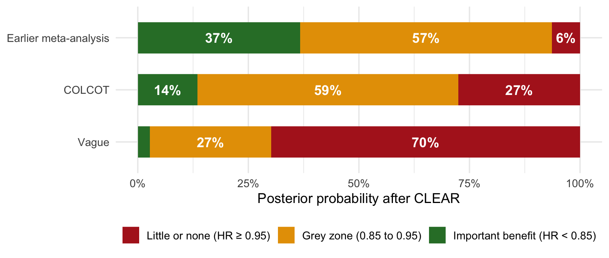

explain what a posterior probability adds to a P value and a confidence interval for a clinical decision;
choose and justify priors for the mean effect and for the between-study standard deviation τ, and report a community of priors;
fit a Bayesian random-effects meta-analysis, summarise the posteriors for μ and τ, and derive the prediction for a new trial and the shrunken estimates for each trial;
update an earlier body of evidence with a new trial, and show how the conclusion depends on what was believed before;
turn a posterior distribution into a decision with pre-specified clinical thresholds;
carry out a Bayesian sensitivity analysis and follow a reporting workflow.
R packages:dplyr, tidyr, purrr, ggplot2, metafor, knitr; bayesmeta and brms for the code that is shown but not run.
Chapter 12 introduced the Bayesian random-effects model and showed that, with enough studies and weak priors, it gives numbers close to a frequentist analysis while answering different questions. This chapter develops the approach: why the questions it answers matter, how to choose priors, and how a Bayesian meta-analysis resolves a controversy in which the same evidence was read as showing both that a treatment works and that it does not.
13.1 Why Bayesian?
A frequentist meta-analysis answers the question “is the average effect different from zero?”. Clinicians, guideline panels and patients ask different questions: how probable is it that the treatment helps, how probable is a benefit large enough to matter, and what should I expect in my patients? A posterior distribution answers these directly. Two examples show what the P value hides.
Figure 13.1: Two trials with P = 0.03. With a flat prior, the shaded area is the probability of a clinically important effect (RR < 0.95).
Both trials are “significant” at P = 0.03. Trial 1 estimates precisely an effect too small to matter; Trial 2 estimates imprecisely an effect that is probably important. The P value cannot distinguish them; the probability of a clinically important effect can.
Figure 13.2: Two trials with P ≈ 0.3. The shaded area is the probability of an important benefit (HR < 0.9), with a flat prior.
Both are “not significant” and would usually be reported identically, as showing no benefit. Trial A is too small to tell: an important benefit still has a probability of about 31%. Only Trial B, with its narrow interval, makes an important benefit unlikely. The conclusion comes from the posterior, or at least from the whole interval, not from the P value.
The move from statistical output to clinical action is itself a skill: asking not only “is there an effect?” but “what should I do, given this evidence and what I knew before?”. Bayesian analysis does not make that judgement, but it makes its ingredients explicit and gives it the right inputs: probabilities of effects large enough to matter, a prediction for new patients, and a clear statement of what was assumed.
The prior describes what was believed about the effect before the new evidence, the likelihood what the new data say, and the posterior what is believed after combining them. With a normal prior and a normal likelihood the posterior is normal, with precision equal to the sum of the two precisions and mean equal to their precision-weighted average (Section 12.2). Figure 13.3 shows the update for a pooled RR of 0.90 with a standard error of 0.05 on the log scale, under two priors.
Figure 13.3: Prior, likelihood and posterior for a pooled log RR of −0.10 (RR 0.90, SE 0.05), under a weakly informative and a sceptical prior. Curves scaled to the same height.
A weak prior lets the data speak. A sceptical prior as precise as the data pulls the estimate halfway to the null. Showing both is the point: it makes explicit how much a conclusion depends on prior belief.
13.2.1 Choosing priors for the effect
Four kinds of prior are useful for the mean effect μ (1,2).
Figure 13.4: Four kinds of prior for a log risk ratio, shown on the risk ratio scale.
Weakly informative: centred on no effect and wide. The usual primary analysis; the data dominate.
Sceptical: concentrated near the null. Does the evidence convince a doubter?
Enthusiastic: centred on a benefit suggested by mechanism or early trials. Does the evidence dissuade a believer?
Empirical: derived from earlier trials or an earlier meta-analysis. The most defensible informative prior when good precedent exists, provided the earlier evidence is relevant to the question.
Reporting results under several such priors, a community of priors, shows whether a conclusion is robust to reasonable differences in prior belief. The usual objection, that priors are subjective, has a usual answer: every analysis makes assumptions (the model, the distributions, the treatment of heterogeneity), and a Bayesian analysis states one more of them openly. (3) suggest replacing the debate about “objective” and “subjective” with the virtues an analysis should have: transparency, consensus, impartiality, correspondence to observable reality, awareness of multiple perspectives and of context, and investigation of stability.
13.2.2 Priors for τ
The prior on τ matters most. With few studies, τ is barely identified (Section 12.3.3), and a frequentist estimate of zero is common. A prior that gives most of its weight to small and moderate heterogeneity, but allows large values, stabilises the estimate and carries its uncertainty into the results. Half-normal and half-t distributions are common choices. (4) and (5) derived empirical predictive distributions for τ² from thousands of Cochrane meta-analyses, by outcome type and type of comparison; these are the natural choice when a defensible informative prior is needed.
13.2.3 Prediction and shrinkage
Two outputs of a Bayesian random-effects model have no simple frequentist counterpart. The posterior predictive distribution for the true effect in a new trial, \(\theta_{\text{new}} \sim N(\mu, \tau^2)\) averaged over the posterior of μ and τ, includes the uncertainty in both, not only sampling variability around fixed estimates. It is usually, though not always, wider than the frequentist prediction interval, because the frequentist interval treats \(\hat\tau\) as known. And the posterior for each trial’s own effect θi is shrunk towards the mean: small, noisy trials move most, large trials barely move, and the amount of shrinkage is set by τ, which the model learns from the data.
13.3 Colchicine after coronary events
Low-dose colchicine, an old anti-inflammatory drug, has been tested for the secondary prevention of cardiovascular events. The evidence offers an instructive sequence: an early meta-analysis that seemed conclusive, a large trial that found nothing, and meta-analyses that again found benefit (6).
13.3.1 The 2022 meta-analysis
(7) pooled seven trials of colchicine in patients with coronary disease undergoing percutaneous coronary intervention (six of them after an acute coronary syndrome) and reported a risk ratio for major adverse cardiovascular events of 0.73 (95% CI 0.61 to 0.87; P = 0.0003), with I² = 6%. The trials ranged from 30-day studies to COLCOT, a trial of 4745 patients followed for a median of 22.6 months (8); their outcome definitions differed, and the pooled MACE did not include myocardial infarction.
DerSimonian-Laird reproduces the published result. With REML and a Hartung-Knapp interval the interval widens and P rises to 0.010: seven trials, one of which (COLCOT) carries half the weight. REML estimates τ² = 0, so the frequentist prediction interval collapses onto the confidence interval, leaving no room for a new trial in a different population to differ. The published analysis reported no prediction interval at all; the DerSimonian-Laird one, 0.59 to 0.90, would have suggested that any new trial would show benefit.
13.3.2 The same seven trials, Bayesian
The grid function of Section 12.2.1 fits the normal-normal model exactly. Here the prior on μ is N(0, 1) on the log RR scale (95% of prior mass on RRs between 0.14 and 7), and the prior on τ is half-normal with scale 0.5 (median 0.34; 95% of mass below 0.98).
# The same model with bayesmeta, which integrates numerically rather than on a gridlibrary(bayesmeta)bma <-bayesmeta(dat, mu.prior.mean =0, mu.prior.sd =1,tau.prior = \(tau) dhalfnormal(tau, scale =0.5))bma$summary; bma$pposterior(mu =log(0.85))
The posterior median RR is 0.72 (0.52 to 0.91), close to the frequentist estimate, and the posterior probability that colchicine reduces risk by at least 15% is high, 0.93. The difference is in the prediction: the 95% interval for the true effect in a new trial is 0.37 to 1.21, which, unlike the frequentist prediction interval, reaches past 1. Seven trials that agree with one another cannot rule out that a trial in a different population would find no benefit. bayesmeta gives the same posterior by numerical integration (9).
Figure 13.5: Seven trials in the 2022 meta-analysis: posterior for the mean risk ratio (left; shaded area RR < 0.85) and prior and posterior for τ (right).
The seven trials shift belief about τ towards small values, but leave a long tail: τ = 0, the frequentist estimate, is plausible, but so is appreciable heterogeneity. The frequentist analysis plugs in one value; the Bayesian analysis averages over all of them, which is why its prediction is wider.
Figure 13.6: Observed risk ratios (open circles, 95% CI) and Bayesian shrunken estimates of each trial’s true effect (filled, 95% credible interval). The dashed line is the posterior median of μ.
The small trials, with very wide intervals, are pulled most of the way to the mean; COLCOT, the largest, barely moves. Shrinkage trades a small bias towards the ensemble for a large reduction in variance, and gives better estimates of each trial’s true effect than the trial alone.
13.3.3 A large trial finds nothing
The CLEAR trial randomised 7062 patients after myocardial infarction at 104 centres in 14 countries to colchicine or placebo. Over a median follow-up of 3 years, the primary outcome (cardiovascular death, recurrent myocardial infarction, stroke or ischaemia-driven revascularisation) occurred in 322 of 3528 patients given colchicine (9.1%) and 327 of 3534 given placebo (9.3%): HR 0.99 (95% CI 0.85 to 1.16), P = 0.93 (10). The authors concluded that colchicine “did not reduce the incidence of the composite primary outcome”. They acknowledged COLCOT, with a similar population and outcome, HR 0.77 (95% CI 0.61 to 0.96), as the most comparable earlier trial, but offered no quantitative synthesis of the two.
Within months, several meta-analyses that included CLEAR concluded that colchicine is beneficial. The largest, by a collaboration that included the CLEAR investigators, pooled nine trials of 30 659 patients with coronary disease or stroke in a fixed-effect model and reported that colchicine reduced cardiovascular death, myocardial infarction or stroke by 12% (RR 0.88, 95% CI 0.81 to 0.95) (11); another reported a 25% reduction in a broader composite (12). Read as dichotomies, these are contradictory: the treatment does not work, and the treatment works. Both statements are made from largely the same evidence, about somewhat different populations and outcomes. A Bayesian analysis asks a better question: how should CLEAR change what we believed before it?
13.3.4 Updating with a community of priors
Three priors describe three reasonable states of belief before CLEAR. All are normal on the log scale, with mean log(estimate) and standard deviation (log upper − log lower)/(2 × 1.96).
Vague, N(0, 2²): let CLEAR speak for itself.
COLCOT, N(−0.26, 0.12²): the trial the CLEAR investigators themselves named as most comparable.
Earlier meta-analysis, N(−0.31, 0.09²): the 2022 pooled estimate. Its trials were smaller, shorter and in a somewhat different population, and its outcome excluded infarction; whether it is exchangeable with CLEAR is a clinical judgement, which is exactly why it is one prior among several rather than the only one.
CLEAR’s result enters as a normal likelihood for the log hazard ratio. Because the priors and the likelihood are all normal, the update is the conjugate calculation of Section 12.2.
Figure 13.7: Prior (dotted) and posterior (solid) distributions of the hazard ratio after CLEAR, under three priors. The dashed line is the CLEAR likelihood.
With the vague prior the posterior is CLEAR’s own result, and the probability of any benefit is about one half. With the COLCOT prior it is 92%, and with the earlier meta-analysis 99%. But under every prior the probability of a reduction of 15% or more is modest, at most 37%. CLEAR has made a large benefit unlikely without eliminating a modest one. That is a statement both the trialists and the meta-analysts could accept, and neither “no effect” nor “a 12% reduction” conveys it.
The normal approximation is adequate for a trial this large. With small trials or rare events, the counts can be modelled directly with a binomial likelihood. brms fits such a model; the grid cannot, because each trial adds a baseline-risk parameter.
Code
library(brms)arms <- tibble::tibble(study ="CLEAR", treat =c(1, 0), r =c(322, 327), n =c(3528, 3534))priors <-list(vague =prior(normal(0, 2), class = b), # log OR for treatcolcot =prior(normal(-0.26, 0.12), class = b),meta =prior(normal(-0.31, 0.09), class = b))fit_vague <-brm(r |trials(n) ~1+ treat, family =binomial(), data = arms,prior = priors$vague, seed =2025)fit_colcot <-update(fit_vague, prior = priors$colcot) # Stan recompiles for a new priorfit_meta <-update(fit_vague, prior = priors$meta)
This model works on the odds ratio scale for cumulative incidence, which with 9% event rates is close to the hazard ratio; with several trials, add (1 | study) for study-specific baselines and treatment effects.
13.3.5 Adding CLEAR to the trials
Using earlier evidence as a prior treats it as exchangeable with the new trial up to the uncertainty in the prior. The alternative is to put CLEAR into the random-effects model as an eighth trial, so that its disagreement with the others is treated as heterogeneity.
Code
dat8 <-escalc(measure ="RR", ai = ev_col, n1i = n_col, ci = ev_pbo, n2i = n_pbo, slab = study,data =bind_rows(colch, tibble::tibble(study ="CLEAR", ev_col =322, n_col =3528,ev_pbo =327, n_pbo =3534)))set.seed(2025)post_c8 <-bayes_nn(dat8$yi, sqrt(dat8$vi))pr8 <-predict(rma(yi, vi, data = dat8, method ="REML"), transf = exp)pr7 <-predict(rma(yi, vi, data = dat, method ="REML"), transf = exp)pi_txt <- \(x) sprintf("%.2f to %.2f", exp(quantile(x, 0.025)), exp(quantile(x, 0.975)))tibble::tibble(Evidence =c("2022 meta-analysis, 7 trials", "7 trials + CLEAR"),`Mean RR, Bayesian (95% CrI)`=c(q3(post_c$mu), q3(post_c8$mu)),`τ, posterior median`=sprintf("%.2f", c(median(post_c$tau), median(post_c8$tau))),`New trial, frequentist (REML)`=c(sprintf("%.2f to %.2f", pr7$pi.lb, pr7$pi.ub),sprintf("%.2f to %.2f", pr8$pi.lb, pr8$pi.ub)),`New trial, Bayesian`=c(pi_txt(post_c$new), pi_txt(post_c8$new))) |>kable(align ="lcccc", caption ="Before and after adding CLEAR as an eighth trial.")
Before and after adding CLEAR as an eighth trial.
Evidence
Mean RR, Bayesian (95% CrI)
τ, posterior median
New trial, frequentist (REML)
New trial, Bayesian
2022 meta-analysis, 7 trials
0.72 (0.52 to 0.91)
0.15
0.62 to 0.86
0.37 to 1.21
7 trials + CLEAR
0.78 (0.56 to 0.97)
0.21
0.52 to 1.16
0.39 to 1.38
CLEAR is by far the largest trial, but in a random-effects model it pulls the mean less than it would in a fixed-effect analysis, and because it disagrees with the earlier trials it raises the estimated heterogeneity, which widens the prediction for a new trial. Which analysis is preferable depends on a judgement the data cannot make: whether CLEAR’s population, timing of treatment and outcome make it one more draw from the same distribution as the earlier trials, or a different and more relevant question. Prediction intervals quoted for “the colchicine evidence” therefore need a statement of which trials, which model and which prior on τ produced them; intervals from different evidence sets or models cannot be compared.
13.3.6 From posterior to decision
A posterior becomes a decision through thresholds chosen before seeing the results. Suppose a relative reduction of less than 5% is too small to justify a daily drug with gastrointestinal side effects (a region of practical equivalence), a reduction of 15% or more is clearly worthwhile, and the range between is a grey zone in which the choice depends on the patient.
Code
post_cl |>mutate(`Important benefit (HR < 0.85)`=pnorm(log(0.85), pm, ps),`Grey zone (0.85 to 0.95)`=pnorm(log(0.95), pm, ps) -pnorm(log(0.85), pm, ps),`Little or none (HR ≥ 0.95)`=1-pnorm(log(0.95), pm, ps)) |>pivot_longer(c(starts_with("Important"), starts_with("Grey"), starts_with("Little")),names_to ="Region", values_to ="p") |>mutate(Region =factor(Region, levels =c("Little or none (HR ≥ 0.95)", "Grey zone (0.85 to 0.95)","Important benefit (HR < 0.85)"))) |>ggplot(aes(p, Prior, fill = Region)) +geom_col(width =0.6) +geom_text(aes(label =ifelse(p >0.06, sprintf("%.0f%%", 100* p), "")),position =position_stack(vjust =0.5), colour ="white", fontface ="bold") +scale_fill_manual(values =c("#B22222", "#E69F00", "#2E7D32"), name =NULL) +scale_x_continuous(labels = scales::percent) +labs(x ="Posterior probability after CLEAR", y =NULL) +theme(legend.position ="bottom")

Figure 13.8: Posterior probability after CLEAR of little or no benefit (HR ≥ 0.95), a grey zone (0.85 to 0.95) and important benefit (HR < 0.85), under three priors.
If most of the mass lies in the first region, recommend against; in the last, recommend for; spread across them, share the decision with the patient or seek more evidence. Whatever the prior, most of the mass now lies outside “important benefit”. A reasonable conclusion is that colchicine provides at most a modest benefit after myocardial infarction: the evidence does not support a strong recommendation, but neither does it rule out benefit for some patients, and a discussion of the uncertainty (and of the side effects) is appropriate.
13.3.7 Sensitivity beyond the prior on μ
With seven trials the data say little about τ, so its prior matters, mainly for the prediction.
Table 13.1: The seven trials of the 2022 meta-analysis: sensitivity to the prior on τ.
Prior on τ
RR (95% CrI)
New trial (95%)
P(RR < 0.85)
Half-normal(0.1)
0.73 (0.60 to 0.87)
0.55 to 0.94
0.96
Half-normal(0.5)
0.72 (0.53 to 0.91)
0.39 to 1.23
0.93
Half-normal(1)
0.71 (0.50 to 0.93)
0.35 to 1.33
0.92
Half-Cauchy(0.5)
0.72 (0.53 to 0.91)
0.38 to 1.22
0.93
The mean barely changes, but the prediction for a new trial ranges from narrow to very wide, depending on how much heterogeneity the prior allows. A leave-one-out analysis (Section 10.4.1) can be run the same way, by refitting the model without each trial in turn; it checks robustness within the evidence, but cannot reveal that the evidence base as a whole is unrepresentative. Every trial in the 2022 meta-analysis pointed the same way; the much larger CLEAR did not.
13.4 A Bayesian workflow
Table 13.2: A Bayesian workflow for a clinical meta-analysis.
Step
Content
1. Ask the clinical question
Not “does it work?” but “how probable is a benefit large enough to change practice?”
2. Pre-specify thresholds
What counts as important benefit, and what as practically no effect
3. Choose and justify priors
Weakly informative primary analysis; sceptical, enthusiastic or empirical alternatives; a defensible prior on τ
4. Fit the model
Grid or bayesmeta for the normal-normal model; brms for binomial data, covariates or complex structures; check convergence (R̂, effective sample size)
5. Report the posterior
Median and 95% credible interval, the prediction for a new trial, and the probability of each pre-specified region
6. Test sensitivity
Community of priors for μ and τ; leave-one-out; risk of bias
7. State the clinical conclusion
For example: “under a vague prior the probability of a reduction of at least 15% is X%; under the COLCOT prior, Y%”
A meta-analysis is only as reliable as the studies in it. Several meta-analyses agreeing does not make a conclusion correct if they share the same trials and the same assumptions, and the clinical questions (crossovers, blinding, the timing and definition of outcomes) matter as much as the statistical ones. What the Bayesian approach adds is a transparent way to combine evidence with what was known before, and to express the result in the probabilities that decisions need.
Key points
A posterior distribution answers the questions clinicians ask: the probability of benefit, of an important benefit, and the expected effect in a new setting.
Two “significant” results can have very different clinical meaning, and two “non-significant” ones very different implications; the whole distribution, not the P value, tells them apart.
Choose priors openly and report a community of priors (weakly informative, sceptical, enthusiastic, empirical). The prior on τ matters most with few studies; empirical distributions are available.
The Bayesian prediction for a new trial includes the uncertainty in μ and τ; shrinkage gives better estimates of each trial’s effect.
Updating an earlier body of evidence with a new trial reconciles results that dichotomous reporting presents as contradictory, as for colchicine and CLEAR.
Pre-specified thresholds turn a posterior into a decision.
Exercises
Using the conjugate update, find the standard deviation of a sceptical prior centred on HR = 1 that leaves P(HR < 0.9) after CLEAR below 5%.
Refit the seven trials of the 2022 meta-analysis with a Turner empirical prior for τ² appropriate to a semi-objective outcome comparing a drug with placebo (see (5)). How do the prediction interval and P(RR < 0.85) change?
Compare the eight-trial random-effects analysis with the analysis that uses the 2022 meta-analysis as a prior for CLEAR. Why do they give different posteriors for the mean? Which better reflects the differences between the trials?
Repeat the shrinkage plot with a half-normal(0.1) prior on τ. Which trials move, and why?
Write a one-paragraph summary of the colchicine evidence for a patient, using posterior probabilities rather than P values.
Further reading
(2) and (1) on Bayesian approaches to trials, including sceptical and enthusiastic priors.
(13) and (6) on Bayesian analyses of cardiovascular trials and of the colchicine evidence.
(4) and (5) on empirical priors for heterogeneity.